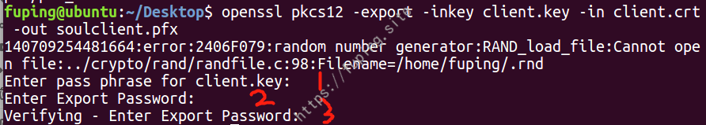
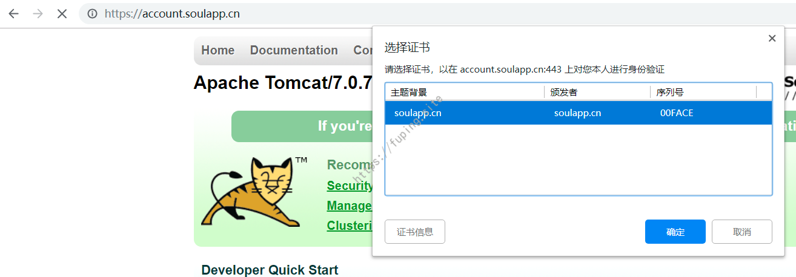
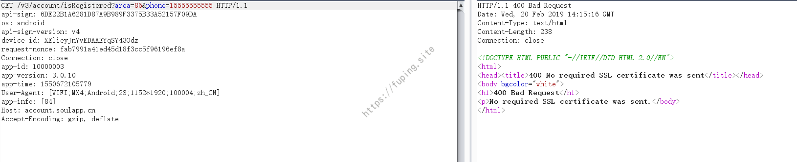
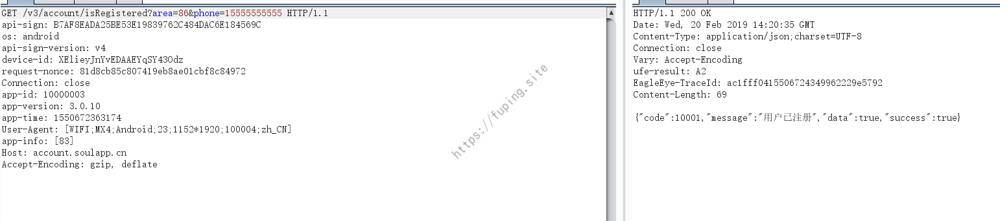

安卓APP测试之双向证书认证
0x01 前言
在《安卓APP测试之HOOK大法-Frida篇》文章中有一个双向证书认证没详细说明，经过孔已己的提示，现在补充一下。
0x02 双向证书认证与解决方法
在对soulApp进行抓包的时候，提示网络错误,请检查网络后重试~
本来以为直接把这个okhttp的证书hook修改成系统默认的即可，就没有详细说明这一部分，结果有网友问双向证书认证这部分是如何处理的，就详细来说明一下如何处理。这里时由于采用了双向证书认证的缘故，所以抓包返回400错误，直接浏览器访问https://account.soulapp.cn/ ，也是不行的
提示No required SSL certificate was sent.如果要访问成功，就要带上证书。
关于双向证书认证：客户端有自己的密匙，并持有服务端的证书，服务端给客户端发送数据时，需要将服务端的证书发给客户端验证，验证通过才运行发送数据，同样，客户端请求服务器数据时，也需要将自己的证书发给服务端验证，通过才允许执行请求。详细的内容可以参考https://blog.csdn.net/enweitech/article/details/53813183。
我们本地来测试一下，简单介绍一下如何搭建双向证书认证环境。
1.双向证书认证服务器的搭建
创建一个证书的步骤：
（1）生成系统私钥
（2）生成待签名证书
（3）生成x509证书, 用CA私钥进行签名
证书的生成过程略。
以tomcat服务器为例。将生成的服务端证书server.p12和客户端信任证书truststore.jks放入conf目录下。修改tomcat下conf/server.xml文件，去掉https的注释。
1 | <Connector port="8443" protocol="org.apache.coyote.http11.Http11Protocol" |
修改为
1 | <Connector port="8443" protocol="org.apache.coyote.http11.Http11Protocol" |
此时
clientAuth="false"，未开启客户端校验。
启动服务器并访问。
虽然提示错误但是点继续前往即可访问。
设置开启客户端校验，即clientAuth="true"
然后重启后访问
无法正常访问，想要正常访问，浏览器导入证书即可
下一步然后输入密码
刷新页面，提示选择证书。
确定后即可访问。
2.soulAPP双向认证解决方法
同理这里soulApp也可以这样做。
这里列举三种方法来完成客户端的验证。归根结底都是证书的利用。
a)浏览器导入证书
利用soulApp中的证书和密码生成浏览器证书。
1 | openssl pkcs12 -export -inkey client.key -in client.crt -out soulclient.pfx |
证书的位置位于资源文件assets中。

标记的1处输入的是soul证书的密码，2和3为证书导入浏览器自己设置的密码，这里为123456
然后导入浏览器，重新访问https://account.soulapp.cn/

选择证书后确定。

根据页面显示内容可以发现此时导入证书后可以正常访问。
b)利用程序完成认证
利用程序的话，参考cn.soulapp.android.api.e.a()方法，进行证书的操作。
精简之后主要代码如下：
然后利用httpclient进行http请求。
当访问不加证书的效果：
使用证书的结果：
由于这是这是之前的数据包，所以已经过期，再次使用需要更换时间戳和签名，但结果成功的。
c)利用抓包工具
使用抓包工具，这里以burp为例。
未导入证书抓包结果：

提示400错误，我们在burp中导入证书
选择证书并输入密码。
证书导入成功。
再次抓包

已经可以正常抓取了。
当然使用其他方法也是可行的，这里就不再列举了。
0x03 总结
本文主要是为了解决APP与服务器之间的双向证书认证问题，没有太多的技巧，主要就是证书的使用。如果服务器采用了双向认证，那么一般在APP中有证书和证书密码的存在，找到之后导入抓包工具即可。